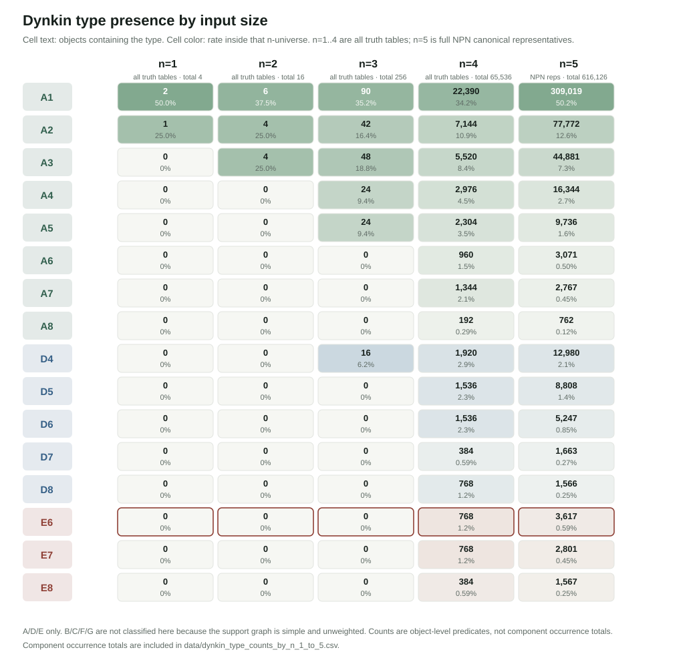
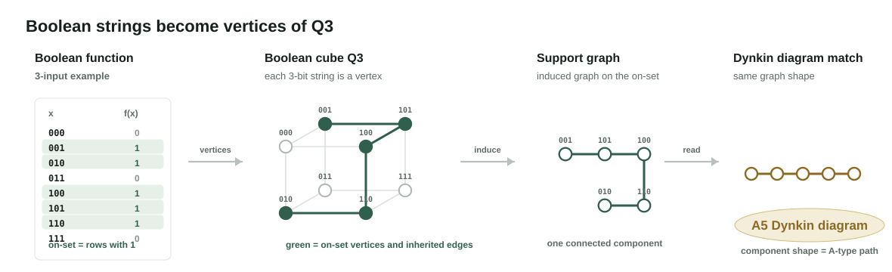
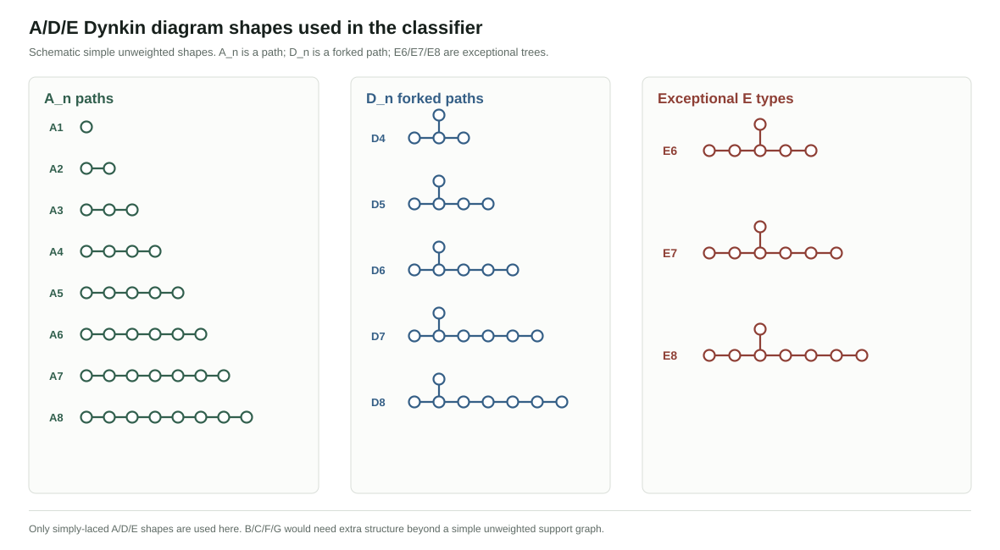
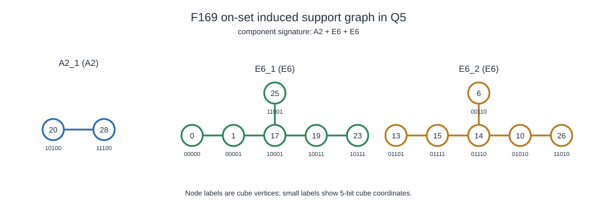

Boolean support graphs classified by A/D/E Dynkin shapes

Example: 3-bit Boolean rows become vertices of Q3; on-set vertices inherit Hamming-distance-1 edges.
Survey counts: A/D/E-shaped components by input size

The A/D/E shapes checked by the classifier.
Case study: F169 in the A/D/E support-graph classification
Observation: F169 is a known EDA benchmark that falls into a rare support-graph bucket
F169's on-set support graph has exact signature A2 + E6 + E6.
The overlap is the reason for the case study: an EDA-important benchmark also lands in an unusual A/D/E support-graph shape. That coincidence may be worth investigating further, without treating it as a cost explanation.
EDA view
F169 is a cost-heavy 5-input benchmark. (known) [Reference 1]
Support-graph view
The exact A2 + E6 + E6 bucket is 3 / 616,126, about 0.00049%. (new observation)
F169 support graph
F169 / 0x169AE443 is one example that reaches the A2 + E6 + E6 pattern under this filtering. The README appendix lists the exact vertices and inherited Q5 edges.

How filtered is F169 by the A/D/E support-graph classification?
Has Dynkin
373,492 / 616,126
60.62%
Has E
7,941 / 616,126
1.29%
Has multi-E
138 / 616,126
0.022%
Has E6 + E6
79 / 616,126
0.0128%
Has E6 + E6 and A2
6 / 616,126; 6 / 79 inside E6 + E6
0.00097%
Exact A2 + E6 + E6
3 / 616,126
0.00049%
A2 + E6 + E6 examples
The exact A2 + E6 + E6 signature has three representatives in this scan.
0x013D3EC2example
0x035ABC83example
0x169AE443F169